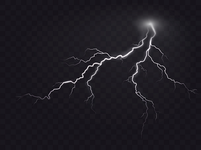

História da Eletricidade e Semicondutores
A eletricidade é um termo geral que abrange uma variedade de fenômenos resultantes da presença e do fluxo de carga elétrica.[1] Esses incluem muitos fenômenos facilmente reconhecíveis, tais como relâmpagos, eletricidade estática, e correntes elétricas em fios elétricos. Além disso, a eletricidade engloba conceitos menos conhecidos, como o campo eletromagnético e indução eletromagnética.[2]
